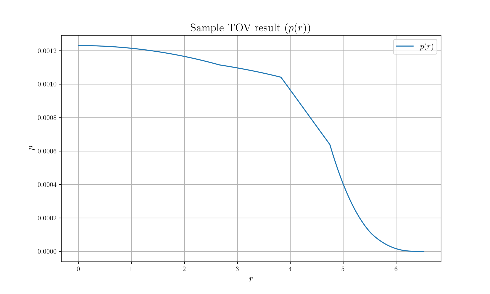
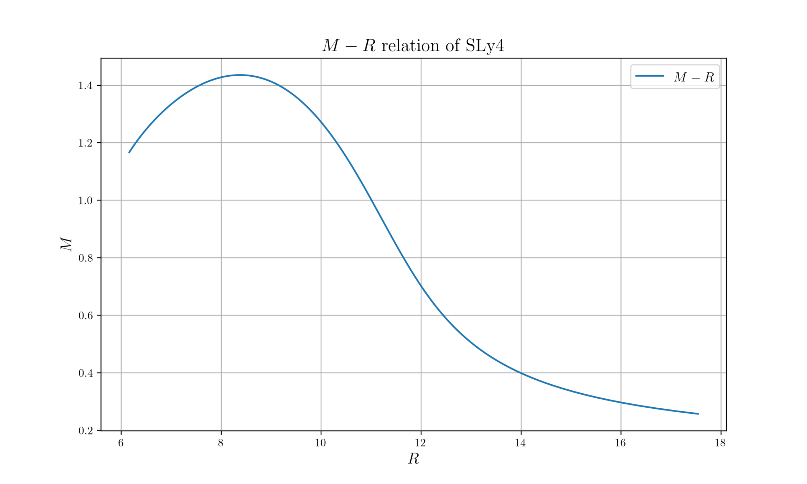

machine learning
with
neutron star
Tae Geun Kim
Yonsei HEP-COSMO
@ Elementary Particle Physics II Final
2020.06.19
Introduce Neutron star /
Review & enhance arXiv: 1903.03400
Table of Contents
-
Introduction
- Neutron Star 101
- Describe neutron star
-
Project
- Data generation
- Bayesian
- Neural Network
describe
neutron star
describe neutron star
- Neutron star is one of the densest stellar object.
\(\Rightarrow\) To describe NS, we need General relativity.
\(\Rightarrow\) Tolman-Oppenheimer-Volkoff equation.
- NS is very cold object. (After 1 month, \(T \sim \text{keV}\) while \(\mu \simeq E_F \sim \text{GeV} \))
\(\Rightarrow\) To describe inner structure of NS, we need Low temperature Nuclear physics.
\(\Rightarrow\) Equation of State.
- But in NS, relative change in the metric over the average distance of baryons is exceedingly small.
\(\Rightarrow\) To describe interaction in NS, we need Quantum Chromodynamics.
\(\Rightarrow\) Walecka model
Tolman-oppenheimer-volkoff equation
\begin{aligned}
\dfrac{dm}{dr} &= 4\pi r^2 \rho \\
\dfrac{dP}{dr} &= - \dfrac{\rho m}{r^2} \left( 1 + \dfrac{P}{\rho}\right) \left(1 + \dfrac{4\pi P r^3}{m}\right) \left(1 - \frac{2m}{r} \right)^{-1}
\end{aligned}
Combine all equations of previous slides, then we can get next equations.
These equation is called Tolman-Oppenheimer-Volkoff equation. (TOV equation)
Need conditions
There are one free parameter & one undetermined function.
- Core density : \(\rho_{\text{core}}\)
- Equation of State : \(P = P(\rho)\)
To solve TOV equation completely, we need these quantities.
M-R relation
http://ibutsky.blogspot.com
Data generation
M-R relation data
-
Xtreme Astrophysics Group (Univ. of Arizona)
Link: http://xtreme.as.arizona.edu/NeutronStars/
- The form of data is given by meshgrid
(Mass vs Radius vs Posterior probability)
Ozel & Freire (2016)
M-R relation data

Contour plot of given data
Decompose to two marginal distributions
Parameter
- There are only 14 measured neutron stars
- Decompose 2D distribution to two marginal distributions
- Do Gaussian fitting for each distributions - get \(m, \sigma^2\)
\(\therefore 2 \times 2 \times 14 = 56\) parameters
Data generation - 1.EoS generation
- Divide \(\rho\) interval \([\rho_0, 8\rho_0]\) into 5 pieces
- Randomly (but causally) choose average sound velocity in each segment
: \(\epsilon < c^2_{s,i} < 1-\epsilon~\text{where}~ c=1, ~\epsilon = 0.01\)
- Calculate pressure node points : \(p_i = p_{i-1} + c^2_{s,i} (\rho_i - \rho_{i-1})\)
- Use SLy4 for \(\rho \leq \rho_0\) region \(\Rightarrow~p_0 = p(\rho_0)\)
- For \(\rho > \rho_0\), interpolate by piecewise polytrope function.
: \(P(\rho) = K_i \rho^{\Gamma_i}\) for \(\rho_{i-1} < \rho < \rho_i\)
Data generation - 1.EoS generation
- EoS data is given by nodes
- Thus, use cubic spline or piecewise-polytrope interpolation
- But for spline, singularity occurs
\(p = a\rho^3 + b\rho^2 + c\rho + d\)
\(\displaystyle\frac{\epsilon}{\rho} = 1 + \int_{0}^{\rho} \frac{p}{\rho'^2}d\rho'\)
- Thus, use piecewise polytrope
\(p = K_i \rho^{\Gamma_i}\) for each interval
Data generation - 1.EoS generation
Data generation - 2. extract data points
- We have EoS, then we can solve TOV equation
- Initial condition: \(\rho_c = 8\rho_0,~m_c = 0,~p_c=0\) at \(r=0\)
- Numerically solve (Use Runge-Kutta 4th order method)
- For \(\rho \in [8\rho_0, \rho_0]\), use randomly generated EoS
- For \(\rho \in (\rho_0, 0]\), use piecewise-polytrope interpolation of SLy4
- If \(p = 0\), then stop
- Measure \((R, M)\)
- Modify \(\rho_c\) and repeat above
- Separate \([8\rho_0, \rho_0]\) to 100 pieces, and solve TOV equation using parallel computation
(Rust - rayon + peroxide) - Save whole \((R, M)\) data. It is called genuine M-R curve
- Separate \([8\rho_0, \rho_0]\) to 100 pieces, and solve TOV equation using parallel computation
Data generation - 2. extract data points
Data generation - 2. extract data points

Data generation - 2. extract data points
Data generation - 2. extract data points

Data generation - 2. extract data points
- Randomly sample 14 data points along the genuine M-R curve in a region \(M > M_\odot\)
(Corresponding to 14 observed neutron stars)
\(\Rightarrow ~ (R_i^{(0)}, M_i^{(0)})~~(1\leq i \leq 14)\)
- Randomly choose \(\sigma_{M_i} \sim \text{Unif}\,[0, M_\odot),~\sigma_{R_i} \sim \text{Unif}\,[0, 5\text{km})\)
\(\Rightarrow\) Take 100 pairs of \((\sigma_{R_i},~\sigma_{M_i})\)
- Extract data \(R_i \sim \mathcal{N}(R_i^{(0)}, \sigma_{R_i}^2 ),~M_i \sim \mathcal{N}(M_i^{(0)}, \sigma_{M_i}^2 ) \)
\(\Rightarrow\) Take 100 samples
- Change EoS (\(c_s^2\)), repeat above process 500 times
\(\Rightarrow~ 500 \times (100 \times 100 \times 14 + 5)\) data
Multi-Layer-perceptron
- 56 inputs = \(14\times (M_i, R_i, \sigma_{M,i},\sigma_{R,i})\)
- 5 outputs = \(c_{s,i}^2 ~ (1\leq i \leq 5)\)
- Regression problem!
Multi-Layer-perceptron
- 56 inputs = \(14\times (M_i, R_i, \sigma_{M,i},\sigma_{R,i})\)
- 5 outputs = \(c_{s,i}^2 ~ (1\leq i \leq 5)\)
- Regression problem!
Multi-Layer-perceptron
Multi-Layer-perceptron
Implementation
- Data pre-processing (TOV solve, parallel computations Data generations)
- Language: Rust
- Library: Peroxide(Numerics), Rayon(Parallel Computation)
- Data format: netcdf
- Multi layer perceptron
- Language: Python
- Library: Tensorflow + Keras
Discussion
- More Data
- I used only \(100 c_{s,i}^2\) data. Need to generate more data!
- I used only \(100 c_{s,i}^2\) data. Need to generate more data!
- Optimization
- In paper, they use Adam optimization with the batch size 1000.
- In paper, they use Adam optimization with the batch size 1000.
- Loss
- In paper, they implement msle loss function.
- In paper, they implement msle loss function.
- More algorithm
- Use another machine learning algorithms!